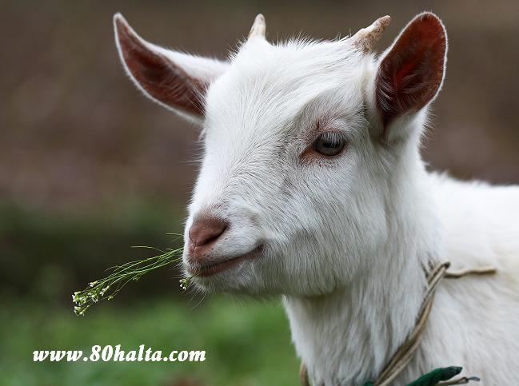

ئالدىنقى يازما
ئالدىنقى يازما كېيىنكى يازما
كېيىنكى يازما
كۈندە 5 رېتسىپ (7) [ئەل ئىچى رېتسىپلىرى]
ئاپتور:Birzat ۋاقتى:2010-07-24



1-رېتسىپ: ئادەمنىڭ زىيادە سوغۇقى ئېشىپ كەتكەندە يېڭى سويغان ئوغلاق تېرىسىگە ئوراپ 30~60مىنۇتقىچە ئىسسىق كاڭدا ياتقۇزسا سوغۇق يەلنى تارتىپ،بەدەندىكى ھارغىنلىقنى يوقىتىدۇ،ئۇنىڭدىن باشقا تۇغۇتلۇق ئاياللارنىمۇ تېرىگە ئالغاندا قان ئايلىنىشنى ياخشىلاپ،سۆڭەك ۋە بوغۇملارنىڭ ئەسلىگە كېلىشىنى تېزلىتىش بىلەن بىرگە داس بوشلۇقى ياللۇغلىنىپ قېلىش،بەل ئاغرىش،پۇت قوللار سىقىراپ ئاغرىشنىڭ ئالدىنى ئالغىلى بولىدۇ.
2.رېتسىپ: ئەگەر پۇتىڭىزنىڭ پىيى تارتىپ قويۇپ بەرمىسە، دەرھال داستىن بىرنى تەييارلايسىزدە، ئۇنىڭغا مۇۋاپىق تېمپىراتۇرىدىكى ئىسسىق سۇنى قۇيىسىز، ئاندىن ئۈستىگە ئازىراق ئاش تۇزى قويۇپ، 5 مىنۇت ئەتىراپىدا چىلاپ بەرسىڭىز، ياخشى مەنپەئەتكە ئىرىشىسىز...ئىشەنمىسىڭىز سىناپ كۆرۈڭ!
3.رېتسىپ: تولا پېيى تارتىپ قىينىلىپ يۈرۈيدىغانلار ئوسمىنى سىقىپ سۈيىدە پەينى يۇيۇپ، ئۇۋلاپ بەرسە ساقىيىپ كېتىدۇ.
4.رېتسىپ: يۆتەلگە يەرلىك كۆك ئامۇتنى چوغقا كۆمۈپ پۇشۇرۇپ يېسە ۋە ياكى تىلىپ ناۋات بىلەن بىرلەشتۇرۇپ قاينىتىپ سۈيىنى ئىچىپ بەرسە ھەم ئامۇتنى يەپ بەرسە يۆتەلگە ئوبدان مەنپەئەت قىلىدۇ.
5.كونا يۆتەلگە ئۇدا يەتتە كۈن ناشتىدا سامساق پىشۇرۇپ يېسە شىپا كۆرگەي. قۇرۇق ئىسىسق مىزاجلىقلار ئاچ قورساق سامساقنى چوغدا پۇشۇرۇپ يېيىشتىن ھەزەر ئەيلىگەي!

 يازما مەنبەسى: بېكەت ئەسىرى
يازما مەنبەسى: بېكەت ئەسىرى خەتكۈش: كۈندە 5 رېتسىپ (7) [ئەل ئىچى رېتسىپلىرى]
خەتكۈش: كۈندە 5 رېتسىپ (7) [ئەل ئىچى رېتسىپلىرى]  مۇناسىۋەتلىك يازمىلار:
مۇناسىۋەتلىك يازمىلار:
ئىنكاس: 8 | نەقىل: 0 | كۆرۈلگىنى: -
 قايتۇرما
قايتۇرما ]
]ئەسللامۇئەلەيكۇم قىزىم 1يېرېمگە كېردى ئختياتسىز پۇتنىڭ ئازراك يېرى كۈيۈپ قاغان بىر ئايغچا بوپ كالد ئېزى يوكمد تاتۇك بوپ كالارمۇ ، تاتۇك بوپ قاسا قاندا قېپ ساقايتقېلى بۇلدۇ؟؟؟
assalamu alaykum , qaqka tuhum arkilik uzuklandurux kilganda ,eki wa serikini arilaxturup la qaqka qepimiz mu ya yana baxka koxidigan matiryal barmu ? maslihat bargan bolsigiz?adatta kanqa kunda bir ketim tuhum arkilik uzuklandursak bolidu . paydisi kanqilik digan tarap lardin maslihatigiz ga ihtiyajmiz!
ئەسسالامۇ ئەلەيكۇم بىرزاد ئەپەندىم. سىز ئۇزۇندىن بېرى مەسلىھەت بېرىپ ھاجەتمەنلەرنىڭ ھاجىتى راۋا قىلىپ كېلىۋاتىسىز. ئاللا تېنىمىزگە سالامەتلىك،ئىشلىرىغا بەرىكەت ئادا قىلسۇن. مەن سىزدىن مەسلىھەت سورىماقچىدىم. مەن بۇ يىل 45 ياش كىردىم،بىر يىل بولدى يول ماڭسام سول پۇتۇمنىڭ بۇلجۇڭ گۆشى تارتىشىپ ئاغرىيدىغان بولۇپ قالدى. تېۋىپلارنىڭ كۆرسەتمىسى بويىچە ئوسمىنى سىقىپ چاپقاندىن كېيىن ساقىيىش ئۇياقتا تۇرسۇن سۆڭىكىمۇ ئاغرىيدىغان بولۇپ قالدى. قىش كىرگەندىن كېيىن تىزىمنىڭ تۆۋەن يېنى قەتئىي ئىسسىمايىدىغان بولۇپ قالدى. نۇرغۇن دورا قىلساممۇ ئۈنۈم بولمىدى. مەسلىھەت بەرسىڭىز بۇ نېمە سەۋەبتىندۇر ؟قانداق دورا قىلسام بولىدۇ؟
ئەسسالام ئەلەيكۇم !بىرزات ئەپەندى ، ئادەتتە ھامىلدار ئاياللاردا خۇن تەۋرەپ كەتكەن ئەھۋال ئاستىدا (ئەمدىلا ھامىلدار بولغان ئەھۋال ئاستىدا )مىللىي تىبابىتىمىزدە ھامىلىنى ساقلاپ قالىدىغان ئۈنۈملۈك دورا بارمۇ ؟ئادەتتە ئاياللار 35ياشتىن 40ياشقىچە بولغان ئەھۋال ئاستىدا 2-ياكى 3-پەرزەنتىنى تۇغسا ھامىلىنىڭ ھەرجەھەتتىن ساغلام بولۇشىغا، كەمتۈك تۇغۇلۇپ قالماسلىقىغا كاپالەتلىك قىلغىلى بولامدۇ ؟مۇمكىن بولسا مەسلىھەت بەرگەن بولسىڭىز ، رەھمەت
ئەسسالامۇئەلەيكۇم بىر زات ئەپەندىم مەن باشقىلاردىن ئاڭلىشىمچە غازتۇخۇمىنى كوپ ىستىمال قىلسا ئۇرۇق نى پۇچەك قىلىپ قوي ھىدۇ دىېشىدى كەن بۇراسمۇ جاۋاپ بەرگەي سىز ئاللاغائامانەت
ئەسسالامۇ ئەلەيكۇم بىر زات ئەپەندى،مەن27ياشقاكىردىم،توي قىلغىلى ئىككى يىل بولدى، بىر ئاي ئالدىدا ئازراق ئېتىز ئىشى چىقىپ قېلىپ يەتتە-سەككىز كەتمەن چاپا-چاپمايلا يۈرۈگۈم سېلىپ،نەپىسىم سىقىلىپ،نەپەس يىتىشمىگەندەك بۇلۇپ قالدىم،ئۇندىن بۇرۇن ئۇنداق بولمايتىم،شۇ كۈندىن تارتىپ ئالاھەزەل ئىككى ھەپتىدەك نەپەس يىتىشمىگەندەك بولۇپ بەك قىينالدىم، دوختۇرخانىدا تەكشۇرتمىگەن يىرىم قالمىدى.ئۆپكەمىنى،بۇرنۇمنى،يۈرۈگۈمنى تەكشۈرۈتتۈم،ھىچقانداق چاتاق يوق بولۇپ چىقتى،心电图دا تەكشۈرۈتسەم يۈرۈگۈم ھەرمىنۇتىغا94قىتىم چىقتى،دوختۇرلار سەندە ھىچقانداق مەسىلە يوق دىدى،2ھەپتىلەردىن كىيىن نەپەس قىيىنلىشىدىغان ئەھۋاللار تەدرىجى يوقاپ كەتتى،لىكىن ئۇنىڭغا ئەگىشىپ بىرەر ھەپتىدەك بېشىم قېيىپ قىينالدىم،قان بىسىمىم 70دە40، 80دە50، يۇقىرى بولغاندا 50دە90بولۇپ چىقتى،ھازىر بېشىم قايىدىغان ئەھۋلمۇ يوقالدى.برەر ئشقا ئىتتك چېچىلىدىغان ،ئتتك ئاچچىقىم كېلىدىغان ،ئىچىم تىتىلدايدىغان بولۇپ قالدىم .تىۋىپقا تۇمۇر تۇتقۇزسام يۈرەك،مېڭىگە قان يىتىشمەيدىكەن دەيدۇ،بۇ زادى نىمە ئىشتۇ؟
گېلىمنىڭ يۇتقۇنچاق قىسمى بەك ئاغرىۋاتىدۇ بەزىدە بەلغەم يىغىلغان ئوخشايدۇ دەپ قاتتىن گېلىمنى قاقىمەن لىكىن ھىچ نەرسە يوق، بەلكىم بۇ توڭلاتقۇدىكى سۇنى ئىچكەنلىكتىن بولغاندۇ. دورىخانىغا بارسام شۇمىدىغان دورا بەردى يەنە ئېغىزغا پۈركۈيدىغان دورا بەردى ، بۇنىڭ ئۈنىمىنى قىلچە كۆرمىدىم. سىزنىڭچە يەنە قانداق قىلسام بولار.
ئەسسالاممۇ ئەلەيكۇم بىرزات ئەپەندى پۇتنىڭ تاپىنى سارغىيۋالسا ھەم تاتلىسا سۇيۇلۇپ كەتسە زەھەرنىڭ تارقىلىشىمۇ ياكى باشقا ئالامەت مۇ
 Birzat نىڭ دە قالدۇرغان جاۋابى
Birzat نىڭ دە قالدۇرغان جاۋابى
ۋەئەلەيكۇم ئەسسالام
جۇڭيىدا شۇنداق قاراش بار ئوخشايدۇ. تاپاننىڭ سارغىيشى زەھەرنىڭ يېغىلىشى دەپ. بۇ ھەقتە بەك ئىنىق بىلىپ كەتمەيدىكەنمە.
جۇڭيىدا شۇنداق قاراش بار ئوخشايدۇ. تاپاننىڭ سارغىيشى زەھەرنىڭ يېغىلىشى دەپ. بۇ ھەقتە بەك ئىنىق بىلىپ كەتمەيدىكەنمە.
ئىنكاس يوللاش